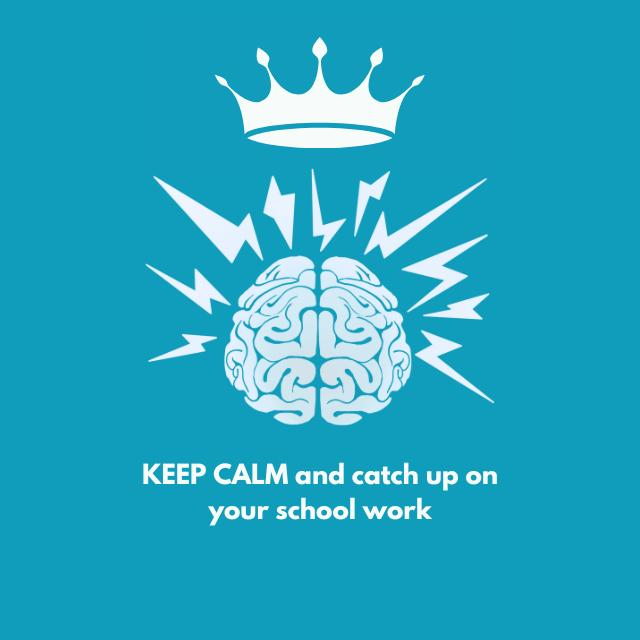

| Founded | February 22, 2022 |
| Founder | Rayyan Sulaman |
| Predecessor | G5BA memers |
| Admin Count | 4 Permanent Admins |
| Core Purpose | Academic resources, reminders, peer-to-peer sessions |
Overview
The first official student group was called School Info. Created on February 22, 2022, by Rayyan Sulaman—a student who later left unexpectedly on April 18, 2023—the group was established to bridge connections between students and provide critical school resources and materials. These provisions include revision sheets, daily reminders, school updates, assignments, upcoming exam notifications, and student-led peer-to-peer sessions.
Currently, the administration consists of four permanent admins who maintain the operational balance of School Info: Ameer M. Alnaimi (serving as de facto leader), Ibrahim Mehtab, Yamen M. Alawnah, and Fares F. This specific administrative makeup was designed intentionally to maintain equal representation and balance between both Non-Arab and Arab students in the student body.
History
While the origins of the first official structural collective trace directly to School Info on WhatsApp, the historical precursor to all student groups was an entity known as G5BA memers, managed by Yazan Al Fakoush. Characterized as an anarchy group with no definitive rules implied or enforced on students, its members mainly utilized the space to coordinate gaming sessions across titles such as Among Us, Roblox, and 1v1.lol. Due to severe inactivity and a complete lack of management, the group quickly dissolved, paving the way for the eventual creation of School Info.
Ex-Admins rule
Following its founding in 2022, administrative operations were primary driven by Rayyan Suleman and Adam Lala (though some conflicting historical sources attribute early management to Ibrahim and Fadel). Initial operations were semi-organized and notably chaotic. Over time, baseline rules were established, including a policy of no excessive cursing, though mild usage remained permitted.
The ecosystem eventually integrated a Microsoft Teams branch named "Prime leaders". Due to prevailing cultural trends of the era, it was subsequently rebranded as "Gamers City" to align with the peak popularity of gaming among the student base. This cooperative platform survived for roughly a year before being formally discontinued in 2024.
Admin Structure
The governance of School Info relies strictly on four permanently appointed seats. An administrator remains in office indefinitely unless they choose to resign voluntarily, or face disbarment by an absolute consensus of the remaining three admins following a serious infraction. To ensure structural equality and accurate cultural representation, the platform mandates that two seats be held by Non-Arab students and two by Arab students.
All active administrators are strictly required to operate within the frameworks outlined in the official rule book. Furthermore, they are bound to uphold the institution's official Cyber-bullying policy to proactively secure and prevent any form of targeted harassment within the student community.
Procedures on the Vacancy of an Admin
In the event that an administrator submits a resignation, they are granted a 14-day deliberation grace period to reconsider before the departure is formally finalized. Once a vacancy is rendered official, a mandatory four-phase transitional process is triggered:
- First Phase (Registration): The executive circle launches open applications detailing the required position conditions. Candidates must possess at least 6+ months of active membership, satisfy the specific demographic gap (Arab or Non-Arab) if the vacancy demands it, demonstrate intelligent or above-average academic/behavioral standings, maintain a minimal-to-clear disciplinary violation background, and be generally well-known among the student populace. Applications are filtered down to exactly 8 candidates.
- Second Phase (Evaluation): The three remaining active admins alongside one participating ex-admin (contingent on their willingness to assist) evaluate the pool. Each reviewer scores the applicants out of a maximum of 10 points. Following evaluations, only the top 4 scoring candidates advance.
- Third Phase (Veto): The collective panel of three admins and the ex-admin must review the remaining 4 candidates. Selection requires absolute unanimity; a single rejection or veto from any admin results in immediate candidate failure. Consequently, the field typically thinned to 3 candidates, though occasionally all 4 may survive.
- Fourth Phase (Popular Election): The remaining candidates are placed into a public poll voted on directly by the student community lasting for 3 days. To validate the election, a total quorum threshold of 25 group votes must be cast, requiring a 60% supermajority for an official appointment. If no candidate secures the 60% threshold, the two candidates with the highest vote counts enter a secondary runoff poll, where a simple majority officially determines the next admin.
Legacy and Future Outlook
From its humble origins as an unmanaged chat group to a highly structured administrative student council, School Info has established itself as an integral asset to the student body. By enforcing a rigid balance of cultural representation, clear procedural transitions, and anti-bullying frameworks, the community continues to offer a safe, transparent, and resourceful environment for all members. As long as these founding structural guidelines are maintained by the executive circle, the community is poised to seamlessly support future generations of students.